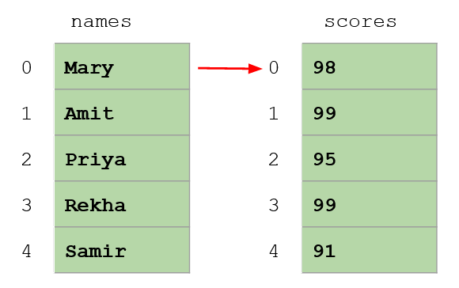

At the end of this lesson, you will be able to:
Suppose you want to track students and their scores. One tempting approach is two separate lists, lined up by position - Mary is at index 0 in both lists, Amit at index 1 in both, and so on:

This works, but it's fragile. The two lists are only connected by an unspoken promise that their positions match. Sort one without the other and everyone's score is suddenly attached to the wrong name. Insert a student in one list but forget the other and everything after it is off by one. The data that belongs together isn't actually held together.
You already have the tools to do this properly. Instead of two lists, use one list where each element is a tuple that keeps a name and score as a single unit:
students = [("Mary", 98), ("Amit", 99), ("Priya", 95)]
total = 0
for name, score in students: # unpack each record
print(f"{name}\t{score}")
total = total + score
average = total / len(students)
print(f"Class average: {average:.2f}")Now each name and score travel together in one tuple - you can sort the list, add records, or rearrange it, and no score ever gets separated from its student. Much safer, and much easier to read.
Tuples rely on you remembering that position 0 is the name and position 1 is the score. For records with more fields, a list of dictionaries spells out what each piece means with a key - so there's no guessing:
students = [
{"name": "Mary", "score": 98},
{"name": "Amit", "score": 99},
{"name": "Priya", "score": 95},
]
for student in students:
print(f'{student["name"]} scored {student["score"]}')Both patterns - list of tuples and list of dictionaries - are how real programs hold tables of data. (It's essentially what comes back when an app asks the internet for information.) Which you choose is a matter of taste and how many fields you have.
Put it all together and you've got a miniature database: collect records into a list with a loop, then loop again to search or filter them. Here's the shape of it - build, then filter:
def main():
# a list of (title, artist, genre) tuples
songs = [
("Bohemian Rhapsody", "Queen", "Rock"),
("So What", "Miles Davis", "Jazz"),
("Take Five", "Dave Brubeck", "Jazz"),
]
# filter: show only the songs in a genre the user asks for
wanted = input("Which genre? ").lower()
for title, artist, genre in songs:
if genre.lower() == wanted:
print(f"{title} by {artist}")
main()Notice every tool from the Python units showing up at once: a list holding the records, tuples bundling each record's fields, a for loop with unpacking to walk them, an if to filter, .lower() to compare fairly, and an f-string for clean output. That's real programming.
Try it! Before you start Assignment 3, stretch this database a little: add a year field to each tuple - ("So What", "Miles Davis", "Jazz", 1959) - and change the filter to ask for one search term that matches if it equals either the artist or the year. (Careful: input() hands you a string, so compare it against str(year).)
This lesson is your on-ramp to Assignment 3. The Tuple Database assignment asks you to build exactly this kind of program - collect records into a list of tuples with a loop, then let the user search or filter them. Everything you need is right here; reread this lesson while you work on it.
That's the end of Unit 6 - and the Python sequence! You've gone from your very first print to building searchable collections of structured data. That's a genuine foundation; be proud of it.